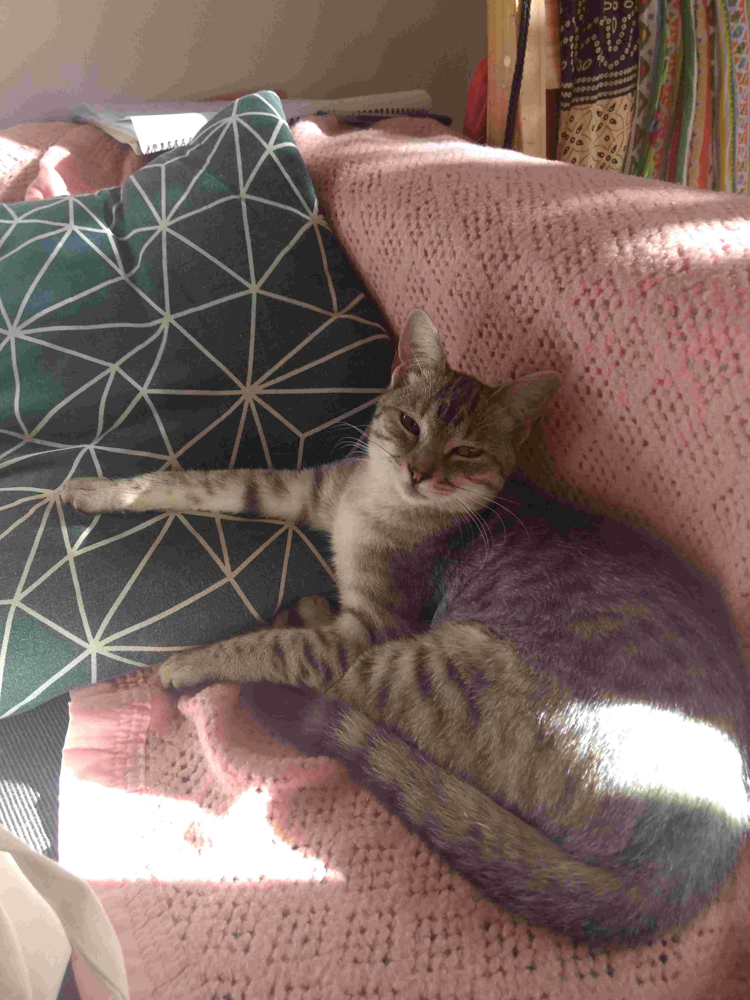
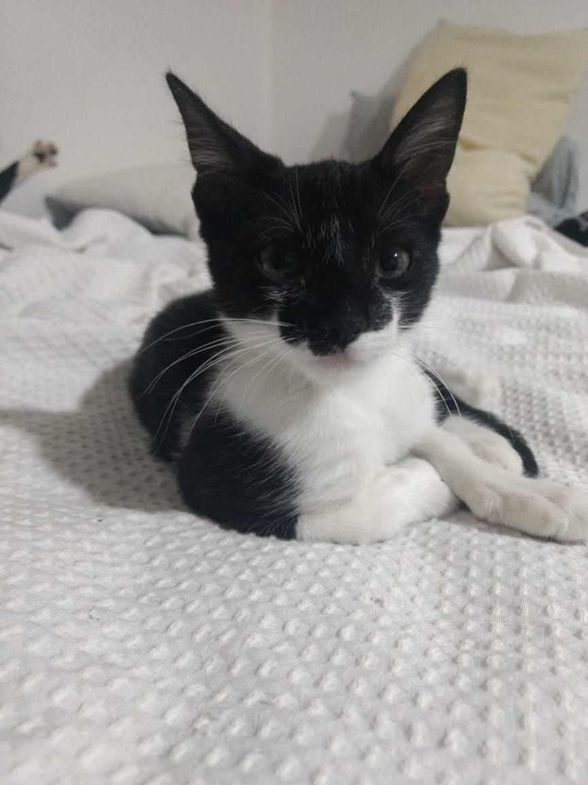
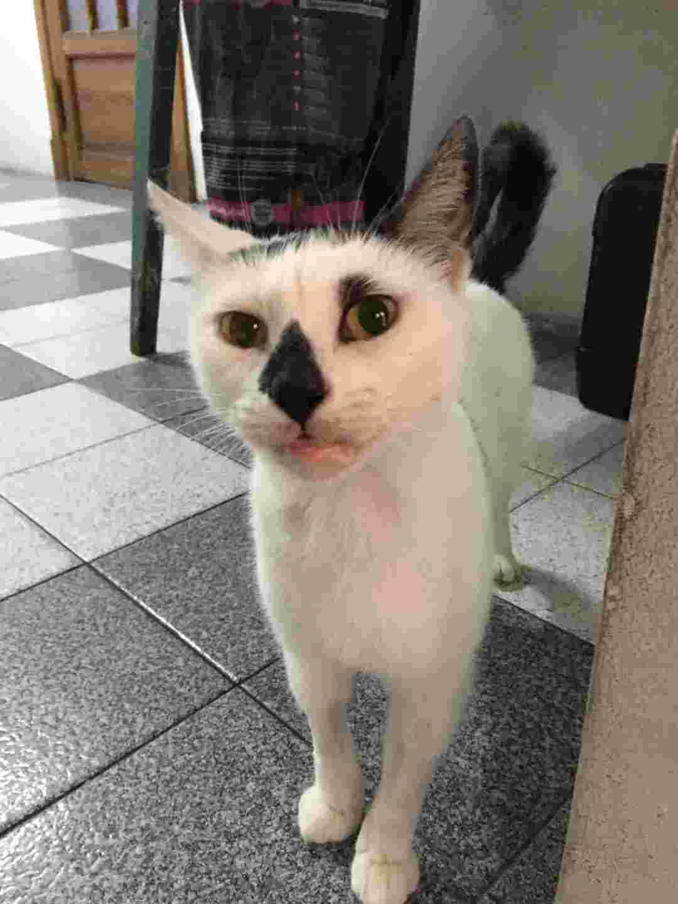
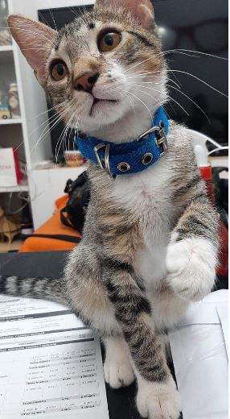
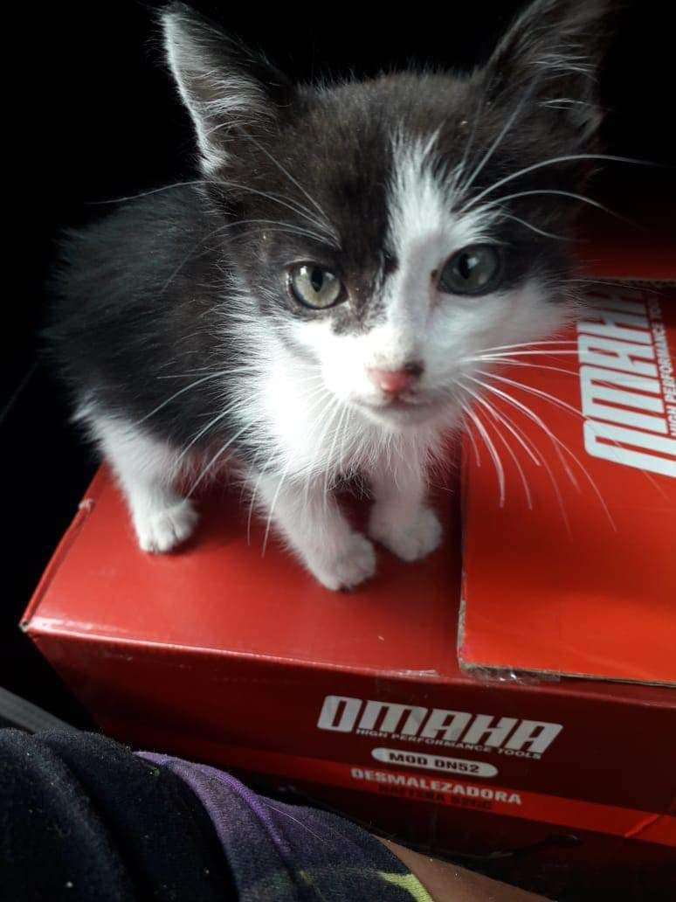
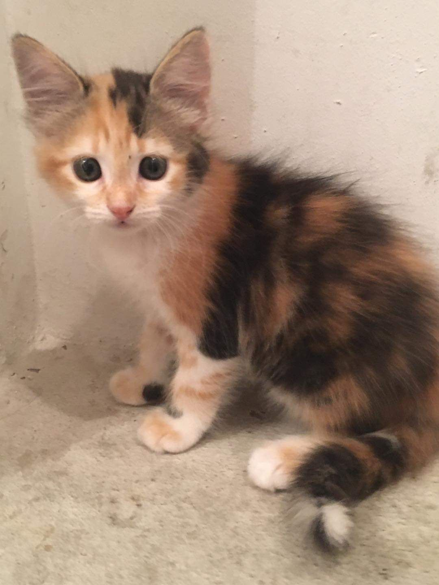

-

Hortensia
Fue encontrada en la calle, en el barrio de Flores. Nadie la reclamó, por lo cual fue castrada y puesta en adopción. Tiene menos de un año. Actualmente se encuentra en tránsito en el barrio de Caballito, CABA. Le gusta estar arriba de los humanos y jugar con plumas y pedazos de tela.
-

Miguelito
Tiene solamente dos meses. Apareció una noche de tormenta en el garage de una proteccionista de José C. Paz. Como todo cachorro, necesita límites y mucha paciencia. Ya hace sus necesidades en las piedritas. Se entrega con compromiso de castración a los 8 meses, sin excepción.
-

Pluma
Tiene un año, ya está castrada y vacunada. Es una gata mimosa, que necesita de afecto y un hogar definitivo.
-

Rolo
Cachorro de seis meses que necesita de humano con ganas de jugar todo el día y que lo deje dormir en la cama mientras le pasea por la cabeza. Con compromiso de castración sin excepción.
-

Rata
Tal como su nombre indica, tiene el tamaño de una laucha. Necesita que le enseñen a hacer en las piedritas, a comportarse, y a jugar. Es un cachorro, y como tal implica una responsabilidad que se asume de por vida. Se entrega con compromiso de castración a los 6 meses.
-

Medusa
Una gata hermosa con mala suerte, porque después de dos intentos fallidos de adopción, sigue esperando a su humano o humana ideal para pasar su vida. Es un poco traviesa, nada que con límites no se solucione. Debe ser castrada sí o sí a los 6 meses.